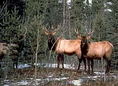

Habitat Requirements
Puzzle
Forest Harvesting
Woodpecker and Us
Drycopus pileatus (also known as "Pileated woodpecker")

The pileated woodpecker is named for the crest of red feathers on its head. A year-round resident of the boreal forest, this bird is the size of a crow. Pileated woodpeckers use their sharp beaks to chip away at dead and dying trees. On a still day, this sound echoes through the forest like a drum. |
Pileated woodpeckers dig nesting holes in large old trees. Although these trees may look healthy, their inner core or heartwood is soft and punky. A new nesting tree is hollowed out every spring. When pileated woodpecker nests are abandoned, they are claimed by other birds. Mergansers, wood ducks, and goldeneye ducks also lay eggs in tree cavities. When you visit the forest, listen for pileated woodpeckers. Their laughing call and loud woodworking can be heard for a great distance. Scattered chips of wood, and square holes at the base of trees, are other signs of this flying carpenter. |

Pileated woodpeckers live in mature mixedwood forests throughout North America. Because they are so large, pileated woodpeckers need big trees for nesting. Trees at least 18 metres tall and 20 centimetres in diameter are adequate. If nest holes are dug in smaller trees, the tree's trunk may break in severe wind storms. |
Carpenter ants are the pileated woodpecker's principal food. These insects are captured in standing dead trees called snags, and in dying trees with heart rot. Pileated woodpeckers also look for insects in downed logs and high stumps. Dense old-growth stands with an understory of tall shrubs are ideal feeding areas. |
Their sturdy beaks and sticky tongues allow pileated woodpeckers to capture food that goes untouched by other birds. These kinds of adaptations enable many wildlife species to coexist in the same type of habitat. |
Human beings are part of the natural world. Like other creatures, we need food and shelter. Lumber from the forest is used to build our dwellings. Paper products, medicine, and blueberries are other things that the forest provides. Our challenge is to take what we need from the forest without destroying it. Land managers are learning more about forest ecology. If this knowledge is properly applied, our forests can always sustain people and wildlife. |
Forest Harvesting and the Woodpecker

To co-manage the forest for pileated woodpeckers, large blocks of mature timber must be kept intact. Where logging takes place, large snags and nesting trees will be left along the edge of cutovers. Within cutovers, some young aspen trees will be protected. In 30 to 40 years, these trees will grow large enough to provide nesting habitat. |

The selective harvest of large trees is hard on pileated woodpeckers. This practice removes trees before they begin to decay, thereby limiting the woodpecker's prime source of food. |

In a forest hushed by winter, the pileated woodpecker is a welcome sign of life. Besides adding to our outdoor enjoyment, the pileated woodpecker helps to care for the forest. Millions of wood-boring insects are eaten by woodpeckers. The abandoned nests of woodpeckers shelter marten, fisher and other furbearing animals. |
 The pileated woodpecker is an indicator of mature and over-mature mixedwood stands. These areas usually contain a great diversity and abundance of wildlife species. By focusing attention on old-growth forest, pileated woodpeckers have become a conservation emblem. If enough of their habitat is conserved, Saskatchewan's boreal forest will remain a special place. |